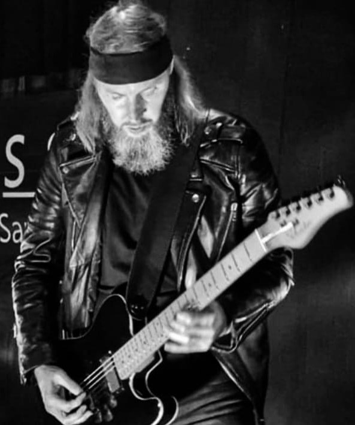
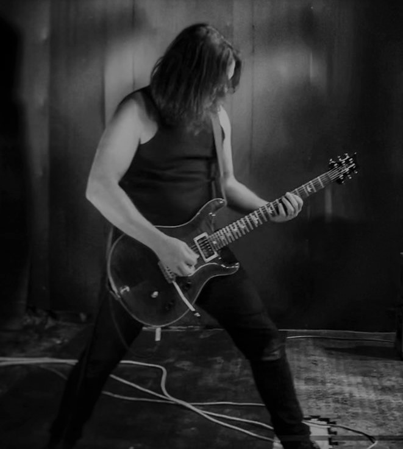
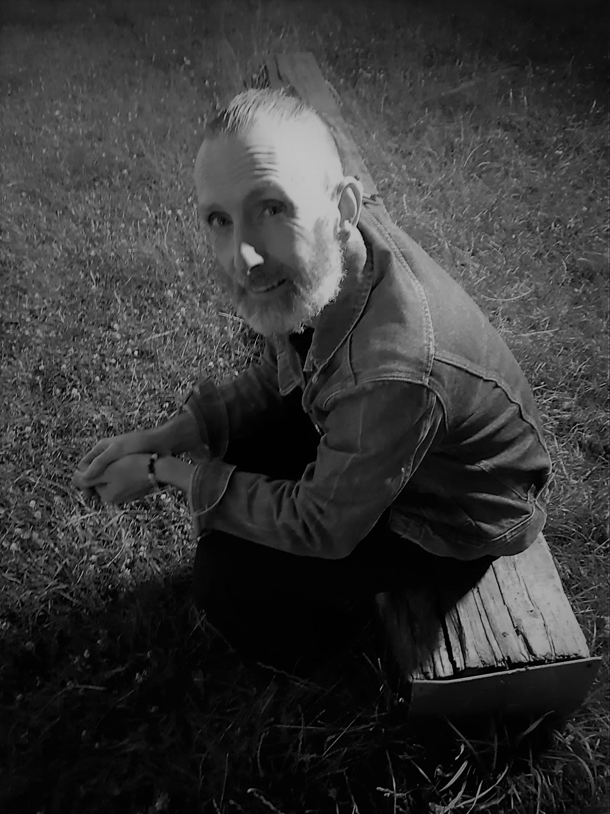
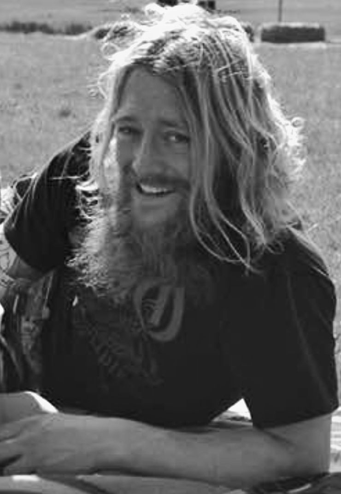

I grew up in Dewsbury, West Yorkshire, and started playing guitar when I was 15. After learning some chords and scales I began writing my own songs. I take my musical influences from doom, metal, NWOBHM, folk and prog. Tony Iommi and John Renbourn are some of my guitar heros. I have been in many bands over the years, worked as a professional musician, played in signed bands, released studio albums, toured and played many gigs and festivals. I am pagan, and I use my spiritual beliefs and interests in history and mythology as lyrical influences.

As long as I can remember I have been in love with the sound of an electric guitar but didn't pick it up before the age about 16! From the first time I heard Aerosmith and saw the video to ‘Love In An Elevator’ with Joe Perry in the lift with the Les Paul, I knew I wanted to be a guitar player and I totally got bitten and knew that I just had to be in a band.
Then I discovered Van Halen a little later on and that was it! Eddie Van Halen changed my life after watching the ‘Right Here, Right Now’ live video and that would inspire me during the early days of finding and developing my own technique. My guitar heroes are EVH (of course), Jake E Lee, Zakk Wylde, Mark Tremonti, Warren Demartini the list is endless!
After being in a few non-starter bands I formed Condition Black which is how I met Paul. We always connected well musically but as with most bands, Condition Black disbanded and we all went our separate ways. I would later form King Nothing with my brother which is how I met Andy and after quite a few years gigging up and down the country King Nothing fizzled out. Paul and I reconnected in 2018 and during lockdown 2020 he asked if I would be interested in forming a band. That's how Sabbat Wolf was born. I knew Andy from my previous band and Paul knew Carl so we hit the ground running.

My earliest memories are of loving music, I started by playing brass instruments in school, then progressed onto drums which I played for many years. I met Paul through a band called ‘Earthen Ritual’ where I was briefly the live drummer, unfortunately that project didn’t last, but when Paul was putting a new project together he asked if I wanted to be involved. I am now the bass player and vocalist of Sabbat Wolf.

My grandad bought me a kit for Christmas 1994. I grew up liking Kula Shaker, Deep Purple, Megadeth, Metallica, Korn, Whitesnake and all sorts of other different influences like Jamiroquai, Stevie Wonder and Kool and The Gang. I was in a load of bands through my teenage years and got paid in beer for doing gigs on a school night, which was cool. I'd been poached by some older dudes. Work and life got in the way of music for a lot of years, but then in 2013 I joined King Nothing, where I met Stu. We split up in early 2020 and later that same year, me and the other lads met up as Sabbat Wölf for the first time. Our different approaches seem to work well and I think it's better than if we all listened to the same bands all the time.
©2022 - Site Built by Tom Lewis
tomlewisint@gmail.com